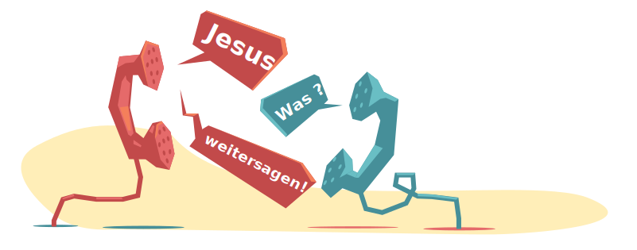
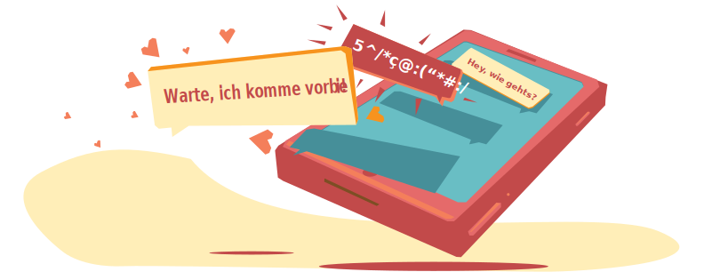

Weitererzählen - wie wir das Gute weitergeben
In der Zeit von Jesus hatte jede Familie ihren Auftrag, eine gemeinsame Mission. Eine solche Mission hat Jesus auch seiner Familie, den Jüngern gegeben, bevor er die Welt verlassen hat.
Plant für diese Lektion 40 Minuten ein.
Austauschen Tauscht zuerst einmal zusammen aus
Entdecken
Als Jesus wusste, dass seine Zeit gekommen ist, um die Welt zu verlassen und zu Gott zu gehen, hat er seine Freunde, die Jünger, nochmals zusammengerufen. Dieses Ereignis wird zum Beispiel in Matthäus 28, 17-20 beschrieben:
Als sie ihn sahen, beteten sie ihn an - aber einige zweifelten immer noch. 18Jesus kam und sagte zu seinen Jüngern: »Mir ist alle Macht im Himmel und auf der Erde gegeben. 19Darum geht zu allen Völkern und macht sie zu Jüngern. Tauft sie im Namen des Vaters und des Sohnes und des Heiligen Geistes und 20lehrt sie, alle Gebote zu halten, die ich euch gegeben habe. Und ich versichere euch: Ich bin immer bei euch bis ans Ende der Zeit. Matthäus 28, 17-20
Wo hast du deine Zweifel an Jesus? Wo fällt es dir leicht, ihm zu vertrauen?
Die letzten Worte eines Menschen haben eine ganz besondere Bedeutung. Jesus gibt seinen Jüngern bei dieser Gelegenheit einen Auftrag. Er will, dass seine Jünger den Menschen überall auf der ganzen Welt die gute Nachricht von Jesus erzählen und sie in seine Nachfolge rufen. Das ist der grosse Auftrag Jesu an seine Jünger. Er gilt noch heute – auch für uns!
Wie haben die ersten Jünger den Auftrag umgesetzt? Man kann dies mit folgenden drei Schlagworten beschreiben:
- Wort
- Wunder
- Werke
Schauen wir uns die einzelnen Elemente etwas genauer an:
1. Wort – die Botschaft von Jesus erzählen
Immer wieder sehen wir in der Apostelgeschichte, wie die Jünger davon erzählen, was Jesus getan hat, wer Jesus ist und wie er eines Tages zurückkommen wird. Dies geschieht teilweise in Ansprachen vor grossem Publikum (z.B. Apg 3, 12-26) oder auch im Gespräch zwischen einzelnen Personen (Apg. 8.26-40).
Eine weitere Art die Botschaft von Jesus weiterzusagen besteht darin, unsere persönliche Glaubensgeschichte zu erzählen. Wie habe ich Jesus kennen gelernt, was hat er in meinem Leben bewirkt und verändert. In wunderbarer Weise erzählt Paulus in Apg. 22.1-21 seine persönliche Geschichte, wie er Jesus kennen lernte.
Lest gemeinsam die Geschichte von Paulus durch.
Schreibe du deine Geschichte mit Jesus auf. Du kannst dabei lernen von Paulus. Er erzählt seine Geschichte mit Jesus in drei Schritten:
- Paulus schildert, wie sein Leben früher aussah (Vers 1-5). Wie hast du gelebt, bevor du Jesus kennen gelernt hast? Was war dein Lebenssinn? Welches waren deine Herausforderungen?
- Paulus erzählt, wie er Jesus begegnet ist (Vers 6-13). Wie hast du Jesus kennen gelernt? Warum hast du begonnen, an ihn zu glauben?
- Schliesslich beschreibt Paulus, wofür er jetzt lebt (Vers 14-18). Wie sieht dein Leben heute aus? Was hat sich verändert, seitdem du Jesus kennst? Was ist sein Auftrag für dich?
2. Wunder – in der Kraft des Heiligen Geistes wirken
Jesus hat auf wunderbare Weise Kranke geheilt und von Dämonen belastete Menschen befreit. Aber nicht nur von Jesus wird uns solches berichtet, sondern auch von seinen Jüngern. So treffen beispielsweise Petrus und Johannes im Tempel auf einen Bettler, der gelähmt ist und sie um Geld bittet. Anstatt eine Spende zu geben, befiehlt Petrus dem Gelähmten aufzustehen. Und tatsächlich: Der gelähmte Mann steht auf, beginnt im Tempel herum zu hüpfen und Gott zu loben – er ist geheilt! (vgl. Apg. 3).
Wunder sind Zeichen des Sieges von Jesus über die Macht von Krankheit und Tod. Er ist gekommen, die Werke des Teufels zu zerstören (1. Joh. 3.8). Wunder sind ein Vorgeschmack auf die zukünftige Welt, in der es kein Leid, keinen Schmerz und kein Sterben mehr gibt.
In Markus 16 beschreibt Jesus die Kennzeichen seiner Nachfolger. Er sagt unter anderem (v. 18): „Kranken werden sie die Hände auflegen und sie werden gesund werden.“ Der Auftrag, in der Kraft des Heiligen Geistes Wunder zu wirken, gilt also auch uns.
Kennst Du jemanden der krank ist? Hast Du schon mal überlegt für diese Person zu beten? Was hält Dich zurück?
3. Werke – Gottes Liebe zu den Menschen bringen
Nebst dem erzählen von Jesus und für Leute zu beten, die Krank sind, besteht unsere Aufgabe als Jünger Jesu, unseren Mitmenschen in seiner Liebe zu dienen. Wir tun dies, indem wir uns um diejenigen Menschen kümmern, die schwach und hilflos sind: die Alten, die Armen, die Abhängigen, die Ausgestossenen. Jesus verheisst uns, dass alle Werke der Liebe, die wir für andere tun, auch Werke der Liebe für ihn sind (Mat. 25.34-40).
Dieser Auftrag umfasst neben dem Lindern des Leids unserer Mitmenschen auch den rücksichtsvollen Umgang mit der Natur, da sie die gute Schöpfung Gottes ist (Gen. 2.15). Es bedeutet weiter, dass wir für Gerechtigkeit eintreten und uns z.B. auch in der Politik für gerechte Ordnungen einsetzen. Wir engagieren uns im Hier und Jetzt, damit Gottes Königreich bereits in dieser Welt sichtbar wird, genau so wie es Jesus dazumal gemacht hat:
Und ihr wisst auch, dass Gott Jesus von Nazareth mit dem Heiligen Geist und mit Kraft gesalbt hat. Er zog umher, tat Gutes und heilte alle, die vom Teufel bedrängt waren, denn Gott war mit ihm. Apg 10.38
Inwiefern engagierst Du Dich für Deine Mitmenschen?
Egzon erlebt auch in seinem Alltag verschiedene Möglichkeiten den Menschen Gottes Liebe zu bringen. Schau dir dazu dieses Video an.
Wir können diesen grossen dreifachen Auftrag, den Jesus uns gegeben hat nur mit Gottes Hilfe erfüllen. Deshalb sagt Jesus bevor er die Jünger beauftragt: „Mir ist gegeben, alle Macht im Himmel und auf Erde.“ Mt. 28,18. Wir erfüllen den Auftrag des Wortes, der Wunder und der Werke nicht in eigener Kraft, sondern in der Kraft, die Jesus uns schenkt. Jesus rüstet uns aus mit seiner Kraft und befähigt uns dadurch, seinen Auftrag in die Tat umzusetzen.
Doch es ist eine grosse Hilfe, wenn wir es nicht alleine versuchen, sondern mit Freunden zusammen diesen Auftrag wahr nehmen und einander dazu ermutigen – wir brauchen diese Familie, die zusammen eine Mission hat.
Tun
- Was hat Gott zu mir gesprochen?
- Was mache ich damit?
- Wem erzähle ich das weiter, was ich heute gekriegt habe?
Gebet Schliesst eure Zeit mit Gebet ab und erzählt Gott, was euch beschäftigt

Gratuliere!
Das war Kapitel 11. Das Letzte Kapitel.
Doch es ist noch nicht vorbei. Ihr könnt euch weiterhin gemeinsam treffen oder mit anderen Leuten zusammen. Und die vier Schritte durchgehen:
Austausch – Entdecken – Tun – Gebet